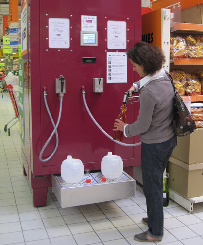

Thu, 16 Sep 2010 18:24:01 · Wine · French · Supermarket · Life
Self-Serve Wine Filling Stations Arrive at French Supermarkets
Some French supermarkets now house 500- and 1,000-liter tanks of wine, where customers can fill up their own reusable bottles for about $2 per liter, according to Dr. Vino. 
This might possibly be quite a blow to those wine connoisseur snobbish :-p
~ Read full story here, via Neotarama.